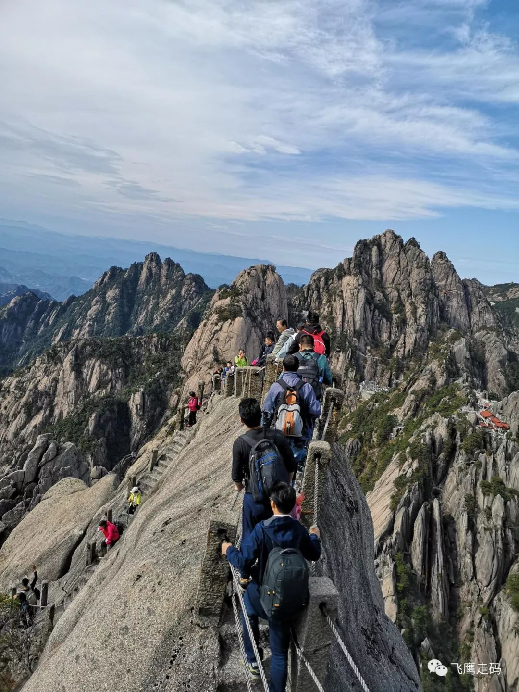
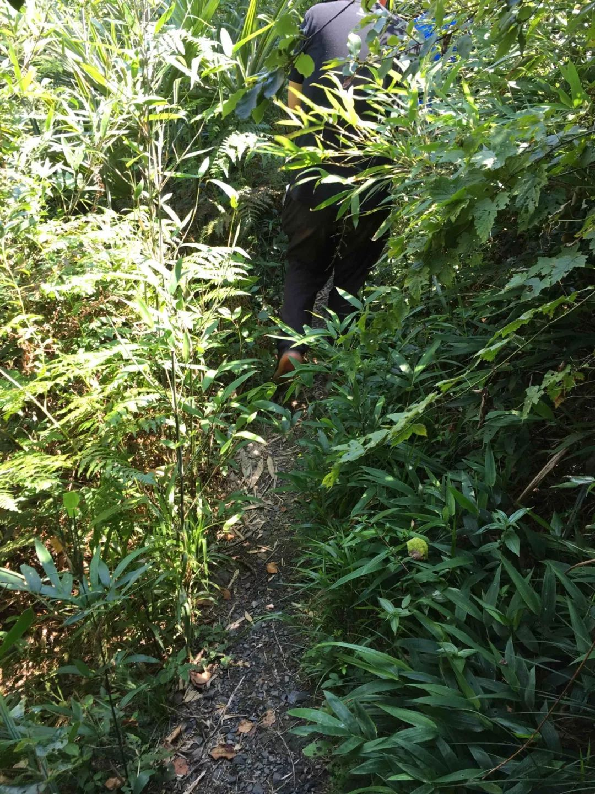

最早看到这句话，是在我刚入职场不久，在我一位学长MSN签名上看到的。当时也是懵懵懂懂地理解它的意思，也很同意这种观点，但是真正有所感悟还是在最近几年。下面我来给大家分享我的两个经历。
青山计划
我们公司有个传统，我们称之为“青山计划”：每年征服一座山。今年我选择了黄山，这也是我第一次爬黄山。在出发之前，老婆特别交代，孩子刚刚六个月，不要去有危险的地方，不能冒险。而我自身也不是爱冒险的人，也有一些恐高，并且我也有两年左右的时候没有怎么运动，也担心我的体能能不能爬上黄山天都峰。在山脚下，爱好爬山的老板号召大家爬天都峰，我心头一热就站到老板这个队伍来了，另外一边负责组织这次活动的 HR 同事就说天都峰最危险的地方是一块山脊，只能用两手抓着绳索才能通过，在经过一番思想斗争以后，我还是放弃爬天都峰了。
我和其他一些不爬天都峰的同事一起，一边爬山一边聊着，累了就休息一下。大概过了两个小时左右，就到了去天都峰的三叉路口了，往右走去天都峰，往左走就绕过了天都峰直奔迎客松去了。由老板带队的那波要爬天都峰的同事已经走远了，看不到了，只能抬头网上望，隐约看到一些人影。我又一次纠结了，天都峰今年马上就要封山了，要爬只能 5 年以后了。问了同行的几位同事，有没有想去天都峰的？如果这时候只要有一个人愿意去，我就会去。但是没有一个要去的。一个人去也确实有些风险，也就作罢了。
其实再想一下天都峰也不会太危险，毕竟是面向普通大众开放的一条爬山线路，景区应该有足够的信心才敢开放的，并且我们也没有听过说有人从这里摔下来了。何况我们在莲蕊峰处，遇到一对老人，在闲聊中得知他们就是从天都峰上下来的，他们已经退休，趁着身体尚好再来爬山。六旬老人都行，我们还有什么不可以的。我至今仍然后悔当初没有上天都峰。

同事们正在穿越天都峰最险之处
小镇会议
我们每个季度的小镇会议一般也会有爬山的活动，令我记忆最深的是 2018 年 7 月在江苏无锡滨城军嶂古道，在炎热的夏天，徒步 15 公里山路。从蠡湖国家湿地公园出发，开始还是比较欢乐的，地势平坦，环境优美。后来逐渐进入少有人至的山路，偶尔能够遇到几个骑行爱好者。反正是要走过同样的路程，我一般喜欢跟着向导走在队伍的前列，。爬过了一座山，前面还有一座，多少次希望之后又接着绝望，多少次想着放弃。当时只有一个信念，不能丢人，不能在别人在分享成功的喜悦时自己不好意思地躲到一边去。别人行我也一定行，用李云龙的话说就是大家都是两个肩膀扛一个脑袋，谁怕谁啊？也就是靠着这个信念，一路坚持下来。可以肯定的是，如果不是大家的一路坚持，互相鼓舞，我肯定早就放弃了。
咕咚记下的军嶂古道徒步路线图


2017 年 7 月浙江临安樟村镇黄金山，和军嶂古道有着异曲同工之“妙”
“如果你想走得快，一个人走；如果想走得远，选择一些人一起走。”送给各位。